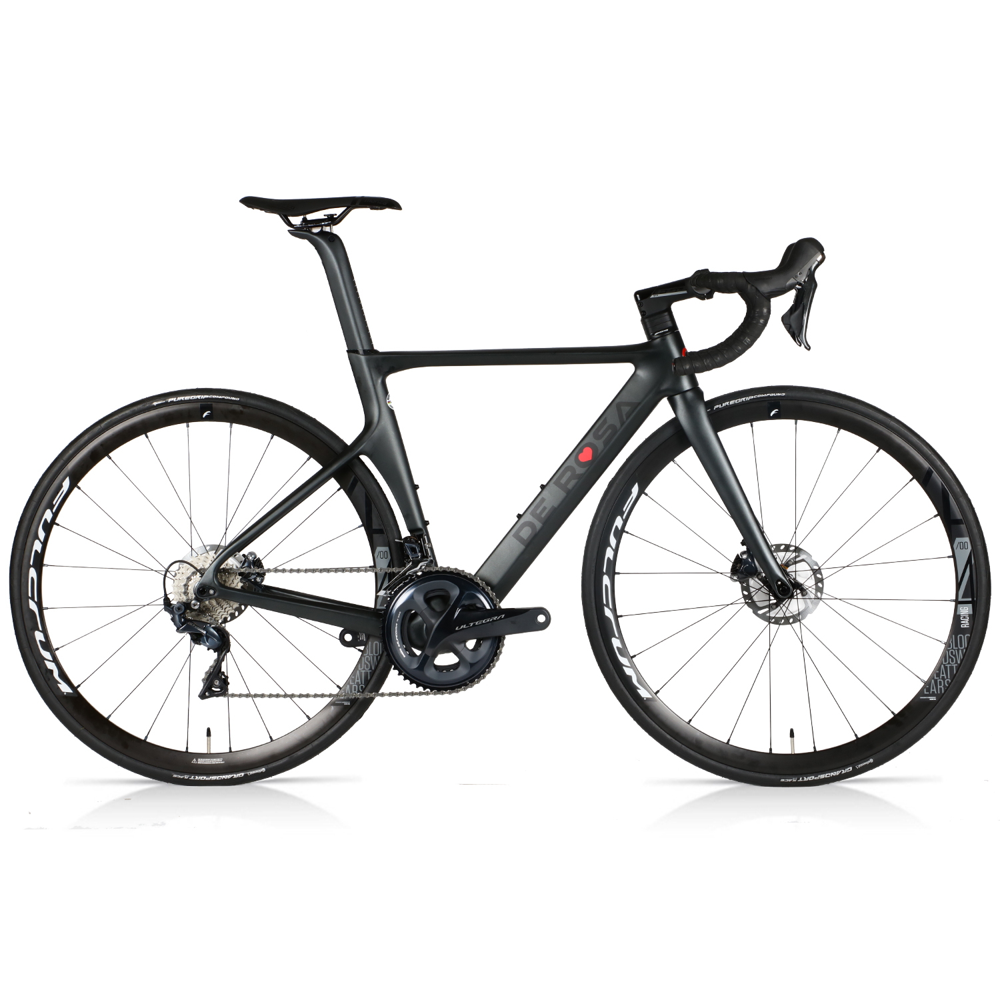

Conclusion
Consider the bicycle: more specifically, the De Rosa SK Pininfarina (Figure 1). I think it's beautiful, but I wouldn't call it art, because being beautiful isn't its primary purpose. It was created to be useful; the fact that it can also be appreciated aesthetically is an intentional bonus.

English doesn't have a word for things like this, but there are lots of other examples. Architecture and typography have deep roots, and starting in the early 20th century, people like Christopher Dresser, Jo Sinel, and Raymond Loewy established industrial design around the idea that mass-produced artifacts were worthy of serious analysis from an aesthetic as well as a utilitarian point of view.
Now think about your favorite piece of software. We have long accepted that its interface can and should be critiqued in the same way as a power drill:
-
Does it do what it's supposed to?
-
Is it pleasurable to use?
What's missing is the third leg of the industrial design tripod:
- Did its design facilitate its manufacture and maintenance?
At a deeper level, what's really missing is a shared vocabulary and a suite of canonical examples that would give us a basis for critiquing software in the way that we can a train or a sofa. We use words like "elegant" when referring to Unix's pipe-and-filter model, but when asked to explain, we run out of meaning long before any reasonably intelligent industrial designer runs out of things to say about the design of a toenail clipper. Will the materials hold up under constant use? Can it be assembled at a reasonable cost? Will people understand how to use it without having to wade through a manual? Will it please the eye when it's sitting on the counter? Training in industrial design gives weight to all of these separately and together, and gives students the tools they need to distinguish the good from the bad.
In retrospect, this is what [Oram2007, Brown2011, Brown2012] were groping toward. If we had decided 50 years ago to call programming "industrial design for software" rather than "software engineering", our conversations might be intellectually richer today. I hope this book will help us get there. I hope that some day we'll be able to talk to each other about the beauty of software because it is beautiful and we deserve to have ways to say that. Until then:
Start where you are.
Use what you have.
Help who you can.